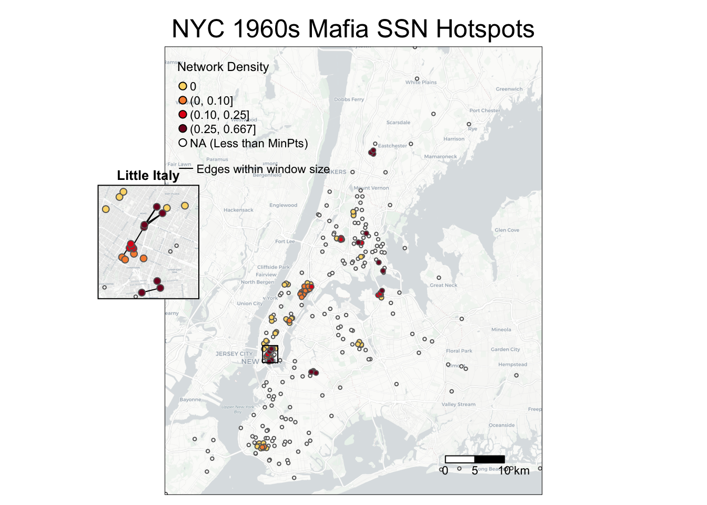

Chapter 6 Advanced SSN Metrics
The following subchapters will introduce advanced SSN metrics. Spatial Social Network (SSN) refers to social networks where the nodes are also geolocated. They can be collaborations between organizations, economic hiring between individuals, trades between companies, and friendships. Different from social network metrics or spatial methods, these metrics tend to focus on the interaction between the networks and geographic space. While the metrics are designed for small-scale SSNs, some can also be applied to analyze origin-destination flows, POI visits, and mobility data.
6.1 SSN Hotspots Detection
In this chapter we show two GIS methods, EdgeScan and NDScan, for capturing areas with high and low levels of number of edges or network density respectively. Both methods are moving window processes that count the number of edges and network density, respectively, for each node in a given focal area (window area). The contents below come from this paper published in Transactions in GIS: Is Your Neighbor Your Friend? Scan Methods for Spatial Social Network (SSN) Hotspot Detection (Liang et al., 2023).
Here are some example research questions that will benefit from EdgeScan and NDScan metrics:
- (Mafia members SSN) Where do mafia members both cluster in geographic proximity and connect in network space?
- (Restaurant POI visits SSN) Where do restaurants cluster and serve local clientele (i.e., heavy-weighted connections to nearby census block groups)?
- (Food sharing SSN) Where are organizations that locate close-by but do not collaborate or share resources with each other?
Our tutorial will cover the following topics:
- How to calculate SSN hotspots using default dataset NYCMafiaNodes and NYCMafiaEdges in
SSNtools. - How to visualize SSN hotspots
- (Advanced) How to find optimal window sizes for SSN hotspots
- (Advanced) How to calculate SSN hotspots within a walking distance radius, using OSM (OpenStreetMap) data as an input matrix.
- (Advanced) Application to a weighted and bipartite network (POI visits)
To begin, let us introduce the basic ideas behind the EdgeScan and NDScan methods. Both methods are based on spatial scan approaches, which summarised statistics in a moving window for a focal node. Therefore, for each node in the network, EdgeScan and NDScan calculate the number of edges and network density in the area centered by the focal node. Network density is the ratio of actual number of edges and the potential number of edges. A high network density (=1) means that nodes in the moving window have maximize all the possible combinations of connections.
Our EdgeScan and NDScan methods provide four different neighborhood definitions:
- Euclidean distance
- Manhattan distance
- User-defined distance (e.g., walking distance)
- K-nearest neighbors
The users can input the following window size
- distance in the unit of coordinate systems (meter in our example)
- a user-defined distance matrix
- the number of nearest neighbors.
The graphic below shows a schematic diagram of how the EdgeScan and NDScan value for a focal node is calculated. The window in the first circle simultaneously represents a potential window size of Euclidean distance of 400m, Manhattan distance of 500m, and 7-nearest neighbors.
We will continue to use sample dataset NYCMafiaNodes and NYCMafiaEdges in SSNtools to illustrate examples. To load the sample dataset and the functions, go to GitHub SSNtool to download the development R package, or type the following lines in your R console. Click the GitHub page for more detailed description of all the functions available in the package and the input formats for each function.
# install.packages("devtools")
devtools::install_github("friendlycities-gatech/SSNtools")The sample node table NYCMafiaNodes is a node table with label and spatial coordinates for each node. The sample edge list NYCMafiaeEdges contains pairs of node labels (corresponding to node table label). This is a unweighted and undirected network. The coordinate system crs is 32118, in the unit of meters. Functions in SSNtools run on base R syntax, though wrangling data may require additional package dependencies. Based on the definitions of EdgeScan and NDScan, directed argument is only implemented for ND-functions, while weighted argument is only implemented for the Edge-functions.
6.1.1 Calculate SSN hotspots using radius or K-nearest neighbor window sizes
To get EdgeScan and NDScan value for each node, you just need to run your node and edge tables through the following codes:
library(SSNtools)
data(NYCMafiaNodes)
data(NYCMafiaEdges)
# ----process dataframe into a list of lists
# params:
# nodes - a R dataframe containing node label, longitude, and latitude
# label_name - the name of the column for node label
# lon_name - the name of the column for node longitude
# lat_name - the name of the column for node latitude
# bipartite_name - (optional) the name of the column that indicates the bipartite set of the nodes. The set of nodes that EdgeScan or NDScan should report on should be coded as 1 in the biparite column, and 0 otherwise.
nodes = processNode(NYCMafiaNodes, 'label', 'LonX', 'LatY')
# params:
# edges - a R dataframe containing source node label and target node label
# source_name - the name of the column for source node label
# target_name - the name of the column for target node label
# weight_name - (optional) the name of the column for edge weight
edges = processEdge(NYCMafiaEdges, 'Source', 'Target')
#-----calculates network density within a radius (500 meters - Euclidean distance) of each node in a network
# params:
# nodes - a list of named lists. Each sublist contains a node.
# edges - a list of list. Each sublist contains an edge.
# radius - radius (in the coordinate unit) of the scanning window.
# (optional) min - minimum number of points required to be in the search window. Default to 3.
# return:
# list(heat, edgeWithin) - a list of two dataframe for node and edge table.
result = NDScanRadius(nodes, edges, 500, min=3)
heat = result[[1]]
edgeWithin = result[[2]]All the SSNhotspot main functions (e.g, edgeScanRadius and NDScanRadius) will return a list of two dataframes. The first dataframe is a node table that has the node label and the heat, presenting the number of edges in EdgeScan and network density in NDScan respectively. The second dataframe is an edge table that has the edge pair and a binary column edgeWithin indicating whether the edge is within the scanning window. Below are example outputs of the heat and edgeWithin dataframes. If the nodes (e.g., AMAROSA-ALEXANDER) do not meet the min argument requirement (in this case, min=3 and thus three nodes in the moving window), the heat value will be NA. Zero has practical meaning in the outputs: it means that there are no connections within the center node’s searching window despite having at least three nodes.
#----- print example outputs at selected rows ------
heat[c(1,93,102), ]## label heat
## 1 AMAROSA-ALEXANDER NA
## 93 SIANO-FIORE 0.0
## 102 POLIZZANO-RALPH 0.6edgeWithin[c(1,254,259), ]## Source Target WithinWindow
## 1 SALERNO-ANTHONY ALBERO-CHARLES 0
## 254 SIANO-FIORE PAGANO-PASQUALE 0
## 259 POLIZZANO-RALPH DIPALERMO-CHARLES 1Here are other SSN hotspots functions using various window size definitions:
#-----calculates network density within 10 nearest neighbors of each node in a network
heat = NDScanKNearest(nodes, edges, 10)[[1]]
#-----calculates network density within a radius (500 meters - Manhattan distance) of each node in a network
heat = NDScanManhattan(nodes, edges, 500)[[1]]
#----calculate the density of edges within a radius (500 meters - Euclidean distance) of every node in a graph
heat = edgeScanRadius(nodes, edges, 500)[[1]]
#-----calculates the density of edges within 10 nearest neighbors of each node in a network
heat = edgeScanKNearest(nodes, edges, 10)[[1]]
#-----calculates the density of edges within a radius (500 meters - Manhattan distance) of each node in a network
heat = edgeScanManhattan(nodes, edges, 500)[[1]]6.1.2 How to visualize SSN hotspots
To visualize SSN hotspots, we need to attach spatial information to nodes in the heat dataframe and visualize nodes based on the hotspot values (i.e., column heat). If the codes below are foreign to you, review Chapter 5: Advanced Aesthetics for more details.
library(tmap)
library(basemaps)
library(sf)
library(tidyverse)
library(stplanr)
library(SSNtools)
# we will use NDScanRadius as an example
result = NDScanRadius(nodes, edges, 500, min=3)
heat = result[[1]]
edgeWithin = result[[2]]
# convert heat dataframe to a spatial sf object
MafiaSpatial = heat %>%
left_join(NYCMafiaNodes, by=c('label'), copy=FALSE) %>% st_as_sf(coords=c('LonX', 'LatY'), crs=32118)
# convert edgeWithin dataframe to line geometry and filter those that are within the window radius.
NYCMafiaEdges_shp = od2line(edgeWithin, MafiaSpatial) %>%
filter(WithinWindow == 1)
# create basemap with functions from basemaps library
set_defaults(map_service = "carto", map_type = "light")
bgbox = st_bbox(MafiaSpatial) %>% st_as_sfc()
bg = basemap_stars(bgbox)## Loading basemap 'light' from map service 'carto'...# create hotspot map with functions from tmap library
tmap_mode('plot')
g =
tm_shape(bg) +
tm_rgb(alpha=0.8) +
#map edges within searching window
tm_shape(NYCMafiaEdges_shp) +
tm_lines(col='black', lwd=1) +
#map nodes with NA values
tm_shape(MafiaSpatial %>% filter(is.na(heat))) +
tm_symbols(col='white', size=0.05) +
#map nodes with heat values, allowing nodes with higher heat values to be mapped on top
tm_shape(MafiaSpatial %>% drop_na(heat) %>% arrange(heat)) +
tm_symbols(col='heat', size=0.1, style='fixed', legend.col.show = FALSE,
palette = c('#FBD977', '#F78D3D', '#E3211B', '#800F26'),
breaks=c(0, 0.00001, 0.10, 0.25, 0.667)) +
#customize legend and layout
tm_add_legend(type='symbol',
labels=c('0', '(0, 0.10]', '(0.10, 0.25]', '(0.25, 0.667]', 'NA (Less than MinPts)'),
col=c('#FBD977', '#F78D3D', '#E3211B', '#800F26', 'white'),
is.portrait = T, title=c('Network Density'), size=0.5) +
tm_add_legend(type='line', labels=c(paste0('Edges within window size')),
col='black', lwd=1) +
tm_scale_bar(breaks=c(0, 5, 10), text.size = 0.7) +
tm_layout(legend.title.size = 0.9, legend.text.size = 0.7, legend.width = 1) +
tm_layout(main.title = 'NYC 1960s Mafia SSN Hotspots',
main.title.position = c('center'),
main.title.size = 1.5)
g
You may wonder why edges are invisible: that is because the edges within the window size (500m) are short-ranged and thus may be hidden under the nodes! The following codes add an inset map to highlight an area with dense SSN hotspots.
# create a bounding box in crs=32118 to retrieve basemap
Inset = st_bbox(data.frame(lon=c(-74.00434, -73.98125), lat=c(40.73080, 40.71109)) %>%
st_as_sf(coords=c('lon', 'lat'), crs=4326) %>% st_transform(crs=32118))
# create a basemap for the inset map
Inset_bg = basemap_stars(Inset)
# create the inset map
InsetMap = tm_shape(inset_bg) +
tm_rgb() +
tm_shape(NYCMafiaEdges_shp ) +
tm_lines(col='black', lwd=1) +
tm_shape(MafiaSpatial) +
tm_symbols(col='white', size=0.05) +
tm_shape(MafiaSpatial %>% arrange(heat)) +
tm_symbols(col='heat', size=0.2, style='fixed',
breaks=c(0, 0.00001, 0.10, 0.25, 0.667), legend.col.show = FALSE,
palette = c('#FBD977', '#F78D3D', '#E3211B', '#800F26')) +
tm_layout(frame=c('black'), frame.lwd = 2, main.title = c('Little Italy'),
main.title.position = c('center'),
main.title.size = 0.8, fontface = 2)
# create the bounding box map
box = tm_shape(st_bbox(Inset) %>% st_as_sfc()) + tm_polygons(alpha=0, border.col='black', lwd=1)
# create aspect ratio to preserve the height and width ratio in the inset map
aspect_ratio = unname((Inset$ymax - Inset$ymin)/(Inset$xmax - Inset$xmin))
# export the background map g with the inset map.
library(grid)
tmap_save(g + box, insets_tm=InsetMap,
insets_vp = viewport(0.21, 0.54, width = 0.3, height = aspect_ratio*0.5),
filename='PATH', dpi=600)
6.1.3 How to find optimal window sizes for SSN hotspots
SSN hotspots are sensitive to neighborhood definition and window sizes. Neighborhood definition should match theoretical questions, such as: Is distance between nodes meaningful; is travel time a factor in the study; or do events form natural clusters of varying radii? As such, there may not be an optimal window size, but visualizing outputs can help with decisions.
Here, we shows how to create a graphic reporting the sensitivity of NDScan results (y values) by window sizes (x values) at the DBSCAN (Density-based Spatial Clustering of Applications with Noise) cluster level. We are interested to see how the average values of EdgeScan and NDScan vary for each SSN hotspots cluster, wherein consistent y values across the x axis would signal a robust method that is not sensitive to change in window size. Conceptually, the codes below are doing the following:
- create an empty dataframe with three columns
cluster,Average Network Density, andWindow Size. - loop through the window sizes and at each window size, do the following operation:
- attach spatial information to the
NDScanRadius()output - assign the DBSCAN cluster ID back to each node
- calculate the average network density by DBSCAN cluster ID
- attach spatial information to the
- visualize average NDScan values (i.e., average network density) for each DBSCAN cluster at each window size through a raincloud plot
library(SSNtools)
library(ggplot2)
library(ggdist)
library(fpc)
nodes = processNode(NYCMafiaNodes, 'label', 'LonX', 'LatY')
edges = processEdge(NYCMafiaEdges, 'Source', 'Target')
# create an empty dataframe to store values in the loop
df = data.frame(matrix(ncol = 3, nrow = 0))
colnames(df) = c('cluster', 'Average Network Density', 'Window Size')
# loop through each window size (meter)
for (i in seq(100, 2000, 100)) {
# calculate the heat values
heat = NDScanRadius(nodes, edges, i, min=3)[[1]]
# attach spatial information to nodes whose heat is not NA
MafiaSpatial = heat %>% drop_na(heat) %>%
left_join(NYCMafiaNodes, by=c('label'), copy=FALSE)
# assign the DBSCAN cluster ID back to each node;
# DBSCAN eps argument takes in the same reachability distance value (window size) and reachability minimum no. of points as the NDScanRadius()
MafiaSpatial$cluster = fpc::dbscan(MafiaSpatial %>% select(c(LonX, LatY)), eps = i, MinPts = 3)$cluster
# filter noise (fpc::dbscan classified noise into cluster 0) and calculate the average network density by DBSCAN cluster
MafiaSpatial = MafiaSpatial %>% filter(cluster != 0) %>% group_by(cluster) %>%
summarise(`Average Network Density`=mean(heat)) %>%
mutate(`Window Size` = i)
# merge output from one window size into the final dataframe
df = rbind(df, MafiaSpatial)
}
# visualize through a raincloud plot
g = ggplot(df, aes(x=`Window Size`, y=`Average Network Density`, group=`Window Size`)) +
geom_boxplot(colour = "lightgrey", outlier.color = NA, width=0.2) +
ggdist::stat_dots(side='left', justification=1.1, binwidth=0.01, alpha=0.5,
col='black', dotsize=1) +
ylab('Avg. Network Density per DBSCAN Cluster') +
xlab('Window Size (Euclidean Distance Meter)') +
ggtitle(paste0('New York Optimal Window Size for NDScan')) +
theme_classic() +
theme(plot.title = element_text(hjust = 0.5, size=20),
legend.text = element_text(size=15))
# manually added reference lines on g
The graphic above highlights three interesting distance ranges for optimal window sizes. At a window size of 100-200 m, there is a fully connected cluster of Mafia members (labeled with arrow c). From 400-2000 m, a cluster is consistent with the network density of 0.67 despite the increasing window size, suggesting that the cluster is either spatially isolated from other Mafia members or any additional Mafia member within the increased scanning window is fully connected to existing cluster members (labeled with arrow d). From 500m-1.3 km, there are four to five medium-high density clusters that are stable across window sizes (labeled with arrow e). Therefore, these ranges may be optimal to reveal interesting or robust outcomes.
6.1.4 Calculate SSN hotspots using a user-defined walking distance matrix extracted from OSM
Euclidean and Manhattan are theoretical distances between two nodes, but in reality, travel distance (e.g., walking distance) can be mediated by geographic features. edgeScanMatrix and NDScanMatrix function take in:
nodes, a list of named lists. Each sublist contains a node.edges, a list of list. Each sublist contains an edge.- a full distance matrix (i.e., the column and row includes all nodes) ** with column and row names ** with symmetrical cell values being travel distance between OD ** with the diagonal pairs (self pairs) coded with NA. When calculating the number of nodes within the window size (e.g., the first row for A1), cells with NA are automatically excluded. 0 represents zero distance.
- (optional)
min, minimum number of points required to be in the search window. Default to 3. - (optional)
bipartite, TRUE or FALSE. If TRUE, bipartite column name should be identified in theprocessNode(). - (optional)
weighted, TRUE or FALSE. If TRUE, weight column name should be identified in theprocessEdge().
Below is an example of a full distance matrix with nodes A1, A2, A3:
# A1 A2 A3
# A1 NA 0 1
# A2 0 NA 2
# A3 1 2 NAThis input format is also required for bipartite networks, even for nodes within the same set. For example, in a bipartite network, if you have 4 nodes and they are A1, A2, B1, B2, then your distance matrix should be 4 by 4 and self-pairs are coded as NA (see below). It is important to note that even though B1B2 (or B2B1) has no connections, they should still have a distance value (=3) in the distance matrix. This is because number of edges and network density needs to know all the nodes within the distance threshold.
# A1 A2 B1 B2
# A1 NA 0 1 2
# A2 0 NA 1 2
# B1 1 1 NA 3
# B2 2 2 3 NA To pull actual travel distance between OD pairs, we recommend using osrm package in R. ORSM is a routing service based on OpenStreetMap data, which allows travel distance calculated in walking, biking, or driving modes. We are most interested in its ability to calculate many-to-many routing distance quickly through osrmTable() function. Please read the osrm documentation carefully if you are applying it to a large amount of data, as it discourages heavy usage.
Let’s say our goal is to get EdgeScan or NDScan values for NYCMafiaNodes and NYCMafiaEdges within a 1 mile walking distance (~1600m), using a osrm generated walking distance matrix. Here are the steps:
- create a dataframe that contains all non-repetitive combinations of nodes (nrow = 44253). Our functions require this information to decide the number of nodes within the window size threshold (and calculate network density), even if the nodes are not connected.
- create a dataframe that contains all non-repetitive combinations of nodes (nrow = 44253). Our functions require this information to decide the number of nodes within the window size threshold (and calculate network density), even if the nodes are not connected.
- (optional) filter the dataframe to OD pairs within 2000 meters Euclidean distance to reduce workload for routing calculation.
- create a origin and destination table where each row is a node with coordinates.
- use
osrmTableto calculate many-to-many routing distance for a subset of data (so that it does not overtax theosrmserver, such as 99 rows). Iterate this process until all data are calculated.
- use
- transform the OD dataframe to the input matrix format for edgeScanMatrix and NDScanMatrix functions.
Step 1-3 are coded as the following:
library(tidyverse)
# create a dataframe that contains all non-repetitive combinations of nodes
allEdgesTable = as.data.frame(t(combn(NYCMafiaNodes$label, 2)))
colnames(allEdgesTable) <- c('Source', 'Target')
edgeDistance = allEdgesTable %>%
#attach coordinates to allEdgesTable
left_join(NYCMafiaNodes, by=c('Source' = 'label'), copy=FALSE) %>%
left_join(NYCMafiaNodes, by=c('Target' = 'label'), copy=FALSE) %>%
#again, dist is in the unit of meter
mutate(dist = sqrt((LonX.x - LonX.y) ** 2 - (LatY.x - LatY.y)**2)) %>%
filter(dist <= 2000)
# print example outputs
edgeDistance[c(1:3), ]## Source Target LonX.x LatY.x LonX.y LatY.y
## 1 AMAROSA-ALEXANDER BIONDO-JOSEPH 302206.2 57958.61 309374.0 64916.18
## 2 AMAROSA-ALEXANDER MANNARINO-GIACINTO 302206.2 57958.61 303457.1 58580.96
## 3 AMAROSA-ALEXANDER CARRUBBA-CORRADO 302206.2 57958.61 300557.9 56947.99
## dist
## 1 1723.116
## 2 1085.023
## 3 1302.158# create origin and destination table
origin = edgeDistance %>%
select(c(Source, LonX.x, LatY.x)) %>% st_as_sf(coords=c('LonX.x', 'LatY.x'), crs=32118) %>%
st_transform(crs=4326) %>%
mutate(LonX = sf::st_coordinates(.)[,1],
LatY = sf::st_coordinates(.)[,2]) %>%
st_drop_geometry()
des = edgeDistance %>%
select(c(Target, LonX.y, LatY.y)) %>% st_as_sf(coords=c('LonX.y', 'LatY.y'), crs=32118) %>%
st_transform(crs=4326) %>%
mutate(LonX = sf::st_coordinates(.)[,1],
LatY = sf::st_coordinates(.)[,2]) %>%
st_drop_geometry()
# print example outputs
origin[c(1:3), ]## Source LonX LatY
## 1 AMAROSA-ALEXANDER -73.9739 40.6886
## 2 AMAROSA-ALEXANDER -73.9739 40.6886
## 3 AMAROSA-ALEXANDER -73.9739 40.6886For step 4, to avoid overtaxing the osrm backend, the following codes only show how to extract walking distance for the first 10 rows of data in origin and des dataframe. Note that osrmTable() assumes coordinate system crs to be 4326 and return distance in the unit of meters.
origin_sub = origin[c(1:10),]
des_sub = des[c(1:10),]
library(osrm)
# distances contains a list of outputs.
distances <- osrmTable(
src = origin_sub[c("LonX", "LatY")],
dst = des_sub[c("LonX", "LatY")],
osrm.profile = "foot",
measure = c("distance")
)
# distances$distances returns a full distance matrix between all nodes in origin_sub and des_sub. We are only interested in the pairwise result and thus only take the diagonal values. Distance values are meters.
Distance_m = diag(distances$distances)
Distance_m## 1 2 3 4 5 6 7 8 9 10
## 11868 1815 2521 1220 5584 8237 941 1027 1027 4332# if you are running the sample codes above in loop, force the system to sleep 1s before running the next loop
# Sys.sleep(1)For step 5, we assume readers have acquired walking distance values for all rows of data. Here we filled the Distance_m vector with random values to demonstrate the codes.
# fill Distance_m with random values
Distance_m = sample.int(2000, nrow(origin), replace=TRUE)
dist = data.frame(Source = origin$Source, Target = des$Target, Distance_m = Distance_m)
# create an edge table with walking distance
edgeDistance = edgeDistance %>%
left_join(dist, by=c('Source', 'Target'), copy=FALSE) %>%
select(c(Source, Target, Distance_m)) %>%
mutate(Distance_m = ifelse(Distance_m == 0, 0.001, Distance_m))
library(igraph)
# create input full matrix from the edge table.
# as_adjacency_matrix() fills empty sell with zeros.
# zero has practical meaning in our example.
# Thus we convert 0 to NA
# and converted those that have actual 0 in distance (converted to 0.001 in the code above) back to 0.
g = graph_from_data_frame(edgeDistance, directed=FALSE, vertices=NYCMafiaNodes)
mat = as_adjacency_matrix(g, sparse=F, attr="Distance_m")
mat[mat==0]<-NA
mat[mat==0.001]<-0
# find SSN hotspots within 1 mile (~1600m) walking distance!
nodes = processNode(NYCMafiaNodes, 'label', 'LonX', 'LatY')
edges = processEdge(NYCMafiaEdges, 'Source', 'Target')
heat = edgeScanMatrix(nodes, edges, 1600, mat, min=3)[[1]]6.1.5 Application to a weighted and bipartite network
We have applied the EdgeScan and NDScan functions to NYCMafiaNodes and NYCMafiaEdges, which is an unweighted, undirected, and non-bipartite network. We can apply the same functions to a weighted and/or bipartite network, using sample dataset POINodes and POIEdges in SSNtools.
The data from POINodes and POIEdges are processed from SafeGraph with extra filters and coding to hide sensitive information. The dataset is meant to be educational and thus can be inaccurate for real implications. The nodes in the dataset are restaurants in Atlanta (set 0) and centroids of census block group (set 1). The edges in the dataset are visits from the census block group to restaurants. The weight of the edges represent the percentage of total visits coming from a particular census block group. You can call POINodes (n=1356) and POIEdges (n=7926) to directly access the sample dataset. The coordinates system is transformed with crs=26967 (unit meter).
If you are using your own dataset, there should be a bipartite column that indicates which set the node is in. The set that would like have EdgeScan or NDScan values reported should be coded as 1, and 0 otherwise. In our POINodes sample dataset, restaurant POIs are coded as 1 and census block group centroids are coded as 0 in the bipartite network. Please reference the sample dataset if you are unclear of the input formats.
We chose K-nearest neighbor as the neighborhood definition for analyzing the sample dataset and KNN=5 as the window size. Here, the distance between the POI (restaurant) and census block group centroids vary across geographic space, because the size of the census block groups tend to be smaller in the city center than the suburbs. Thus, a KNN neighborhood definition is better because it searches for the five closest census block groups (CBGs) around the POI, ignoring distances between the two.
library(SSNtools)
data(POINodes)
data(POIEdges)
nodes = processNode(POINodes, 'label', 'LonX', 'LatY', 'Bipartite')
edges = processEdge(POIEdges, 'Source', 'Target', 'Weight')The following codes use edgeScanKnearest():
# calculate edgeScan values for KNN = 5 in a weighted, bipartite network
result = edgeScanKNearest(nodes, edges, 5, weighted=TRUE, bipartite=TRUE)
heat = result[[1]]
edgeWithin = result[[2]]
heat[c(1:3),]
# label heat
# 1 poi1 476.2827
# 2 poi2 1250.8860
# 3 poi3 1160.1423
edgeWithin[c(1:3),]
# Source Target Weight WithinWindow
# 1 poi1 130890204001 14.545455 1
# 2 poi1 130890205002 7.272727 0
# 3 poi1 131210001002 7.272727 0The following codes use NDScanKnearest():
# calculate NDScan values for KNN = 5 in an undirected, bipartite network
result = NDScanKNearest(nodes, edges, 5, directed=FALSE, bipartite=TRUE)
heat = result[[1]]
edgeWithin = result[[2]]
heat[c(1:3),]
# label heat
# 1 poi1 0.2758621
# 2 poi2 0.2254428
# 3 poi3 0.3029557
edgeWithin[c(1:3),]
# Source Target WithinWindow
# 1 poi1 130890204001 1
# 2 poi1 130890205002 0
# 3 poi1 131210001002 0Note that when the network is weighted, edgeScan related functions report the sum of edge weights instead of the number of edges. If the network is bipartite, only nodes whose bipartite value is coded as 0 (in this case, POI) will report values. Based on the definitions of EdgeScan and NDScan, directed argument is only implemented for ND-functions, while weighted is only implemented for the Edge-functions.
To visualize the POI visits hotspots, you can use the following codes as a reference.
library(tmap)
library(tidyverse)
library(basemaps)
# convert heat dataframe to a spatial sf object
POISpatial = heat %>% left_join(POINodes, copy=FALSE) %>% st_as_sf(coords=c('LonX', 'LatY'), crs=26967)
# attach spatial information to edgeWithin and convert edgeWithin dataframe to line geometry
edgeWithin = edgeWithin %>% left_join(POINodes, by=c('Source' = 'label'), copy=FALSE) %>%
left_join(POINodes, by=c('Target' = 'label'), copy=FALSE)
# convert points to lines without stplanar package. See Chapter 4.1.3.
st_segment = function(r){st_linestring(t(matrix(unlist(r), 2, 2)))}
edgeWithin$geometry = st_sfc(
sapply(1:nrow(edgeWithin),
function(i){st_segment(edgeWithin[i,][c('LonX.x', 'LatY.x', 'LonX.y', 'LatY.y')])},
simplify=FALSE))
# convert edgeWithin back to sf object and filter edges to be within the window
edgeWithin = edgeWithin %>% st_as_sf() %>% st_set_crs(26967) %>%
filter(WithinWindow == 1)
# create basemap
set_defaults(map_service = "carto", map_type = "light")
bgbox = st_bbox(POISpatial)
bg = basemap_stars(bgbox, map_service = 'carto')
# parameters for visualization
legend_name = 'Network Density'
k = '5'
breaks = c(0.07, 0.30, 0.40, 0.50, 1)
labels = c('[0.07, 0.30)', '[0.3, 0.4)', '[0.4, 0.50)', '[0.50, 0.75]')
output = c('Atlanta POI Visits NDScan')
# visualize the SSN hotspots
tmap_mode('plot')
g = tm_shape(bg) +
tm_rgb(alpha=0.8) +
tm_shape(edgeWithin) +
tm_lines(alpha=0.5) +
tm_shape(POISpatial) +
tm_symbols(col='heat', size=0.05, style='fixed', legend.col.show = FALSE,
palette = c('#FBD977', '#F78D3D', '#E3211B', '#800F26'), breaks=breaks) +
tm_add_legend(type='symbol', labels=labels, col=c('#FBD977', '#F78D3D', '#E3211B', '#800F26'),
title=paste0(legend_name, ' (KNN = ', k, ')'), size=0.5) +
tm_add_legend(type='line', labels=c(paste0('Edges within window size')), col='black', lwd=1) +
tm_scale_bar(breaks=c(0, 1, 2, 4), text.size = 1) +
tm_layout(legend.title.size = 1.3, legend.text.size = 1, legend.width = 1) +
tm_layout(legend.bg.color = 'white', legend.bg.alpha = 0.7,
main.title = output,
main.title.position = c('center')) 
6.1.5.1 Reference
Liang, X., Baker, J., DellaPosta, D., & Andris, C. (2023). Is your neighbor your friend? Scan methods for spatial social network hotspot detection. Transctions in GIS. https://doi.org/10.1111/tgis.13050